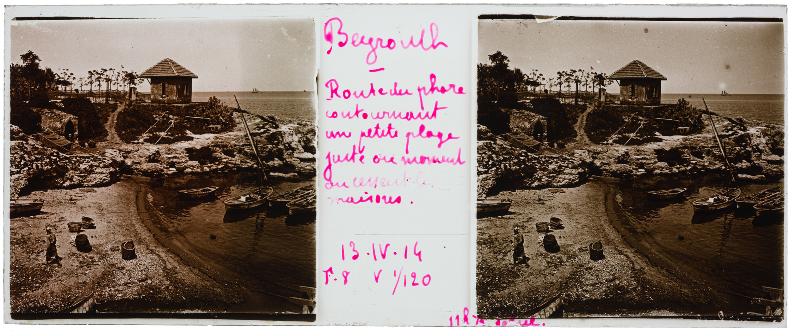
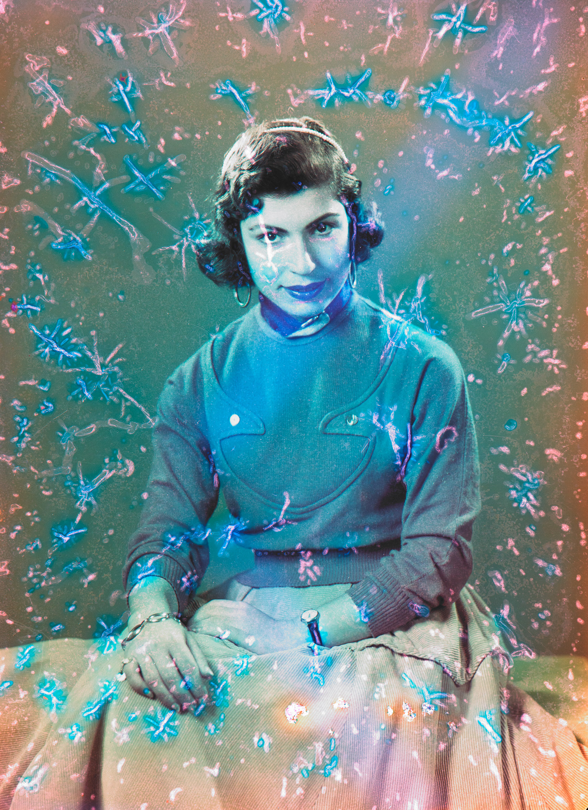
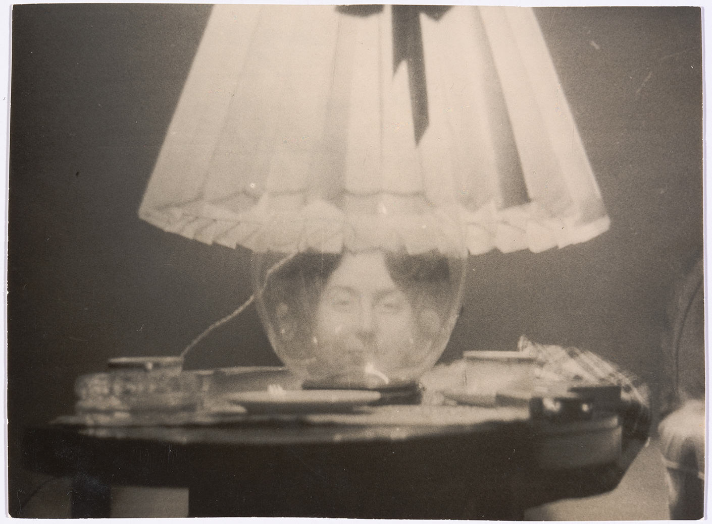

For 22 years, the Arab Image Foundation (AIF) has been one of the most prolific and central institutions in the region. Founded in 1997 by artist Akram Zaatari, and photographers Fouad ElKoury and Samer Mohdad, the AIF’s mission is to collect, preserve, digitise, study, curate, and disseminate the rich photographic heritage and practices of the Middle East, North Africa, and the Arab diaspora. Today, the Foundation is home to more than 500,000 photographic objects, has recently launched its new website, and is preparing to announce a series of platforms through which it aims to widen its global reach.
These new launches come after a period of intense self-reflection and arduous labour on the digitisation of its new collections, and most importantly, after asking necessary questions about the AIF’s new purpose and mission in a world defined by digital visual culture.
Marc Mouarkech and Clémence Cottard Hachem took over the directorship of the AIF in 2017, and now work with a core team of six people alongside a board of directors that includes artists Vartan Avakian, George Awde, Yasmine Eid-Sabbagh, and researcher and curator Kristine Khoury, all of whom, with the exception of Sabbagh, are new AIF members. As members left the board over the years, the Foundation welcomed fresh minds such as artist Hrair Sarkissian and architect Khaled Malas.

Al Manara road, Eugène Cottard, Beirut, Lebanon, 1914, Stereograph transparency. Eugène Cottard Collection, courtesy of the Arab Image Foundation.
In the lead up to the launch of its new website and platforms, the AIF took a long and hard look within to question its archival and dissemination methods, and prompted what Mouarkech described as the AIF’s “repositioning of its archival practices”. The two co-directors set in motion a two-year digitisation plan before the release of the online last month. “We wanted the platform to be a tool to reflect our new stance” towards archival practices, but also with regard to the AIF’s mission, governance model, and development of the platform in an effort “to be more inclusive and collaborative”.
Mouarkech insists on the fact that the AIF “is not an archive centre, but a platform that works at the intersection between archival practices and contemporary artistic practices”. The AIF, he continued, aims to “push the limits and boundaries of image practices in general […] and to push our material towards cultural practitioners in order to produce knowledge, essays and articles, research projects, and artistic interventions in order to promote a better understanding of the history of photography, but also the diversity of the cultures of the Arab region”.
The co-director added that crucial questions were posed about the meaning of having an archive in Beirut today, one whose scope encompasses the Arab region. One central question focused on the onus of running an institution like the AIF: “What does it mean to have such materials in our hands, and what kind of responsibility does it place on us?”
While these questions are being fleshed out through the various platforms the AIF has launched, and will launch in the future, it has decided to concentrate on re-thinking its archive—for now. “All the materials that we have are three-dimensional objects that have layers of memory and history, but also layers of uses by the people who own them—whether they are photographers, families, collectors, or researchers who brought the collections to us”.
The platform, Mouarkech insisted, is a "tool for activation”. This term, widely used by the AIF team, denotes giving the material they are producing a new lease of life by inviting artists and practitioners from different fields to work with the collection. The Foundation’s activities in the next few years will therefore focus on “accessibility, activation and education”, and will build on these activities by launching an educational programme in 2020 aimed at teenagers, university students, and young professionals, whose higher education choices in photography and archival or preservation practices are limited.

Deteriorated studio portrait, 1950-1960, gidital conversion of a chromogenic process negative on cellulose acetate film.
Arshag Collection, courtesy of the Arab Image Foundation.
One important feature that the AIF will launch soon will allow users to tag images with comments and additional information, in an effort to open up conversations between the institution and its audiences on specific images or collections. The Foundation will not censor or intervene on the tags, but will collect the information provided and fact-check them. As of now, the platform boasts more than 22,000 newly digitised images from previously unseen collections. In the next four months, the AIF will make public material previously digitised between 2009-2016, which will bring the total number of images on the platform to 60,000.
The AIF also released the still-under-development Lab, which invites users and researchers to undertake online residencies. Interested practitioners or researchers will receive credentials to help them access specific collections, from which they can build or curate satellite pages. According to Mouarkech, the AIF is interested in the process through which people will use such a platform. The Lab is built in a way to enable users to create layers of research that can include images, texts, documents, and videos or images from the collection itself around specific topics and research projects.
Lab users will not be restricted by time, and the outcome can take on various forms such as a video or an essay, and potentially take on a physical form through a symposium, exhibition, or publication. The point of the Lab is to publicly share the articulation of new ideas and projects with the general public.
In six months, the My Space feature will become available, and will be similar to having a personal account where users can save images and pin them on boards to curate online exhibitions. The AIF is also looking into the potential of Artificial Intelligence tagging to help better document its vast collection.

Portrait of Gulperie Eflatoun in a lamp base, Georges Henein, Cairo, Egypt, 1945, gelatin silver developing-out paper print.
Gulperie Eflatoun Collection, courtesy of the Arab Image Foundation.
By adopting a participatory and digital approach towards its photographic collection, the AIF is working to catch up with the rapidly evolving technology of our era. By doing so, it hopes to open the collections up to larger, more diverse audiences. Mouarkech also stressed on the AIF’s desire to “use the digitised material in so many different ways and link them to so many different [fields], whether they are economic, social [or] ecological”—a marked shift from the artistic orientation that defined much of the AIF’s previous work.
Most importantly, the work undertaken by AIF since its inception has never seemed more urgent and necessary in an increasingly politically volatile and fragmented region. The Foundation’s dedication to open access to its archives to citizens of the Arab region, its diaspora, and the world, is also a reflection of a greater desire to anchor and celebrate our shared histories through innovative and inclusive approaches.
About Rayya Badran
Rayya Badran is a writer based in Beirut. She earned her MA in Aural and Visual Cultures from Goldsmiths College, London in 2008. Her writing has been published in Bidoun, Ibraaz, Art Papers, and most recently in La Belle Revue and Free Berlin newspaper . She is an instructor at the American University of Beirut and the Académie Libanaise de Beaux-Arts where she teaches sound studies.
 Crucial questions were posed about the meaning of having a photographic archive in Beirut today, one whose scope encompasses the Arab region. What does it mean to have such materials in our hands, and what kind of responsibility does it place on us?” — Marc Mouarkech
Crucial questions were posed about the meaning of having a photographic archive in Beirut today, one whose scope encompasses the Arab region. What does it mean to have such materials in our hands, and what kind of responsibility does it place on us?” — Marc Mouarkech